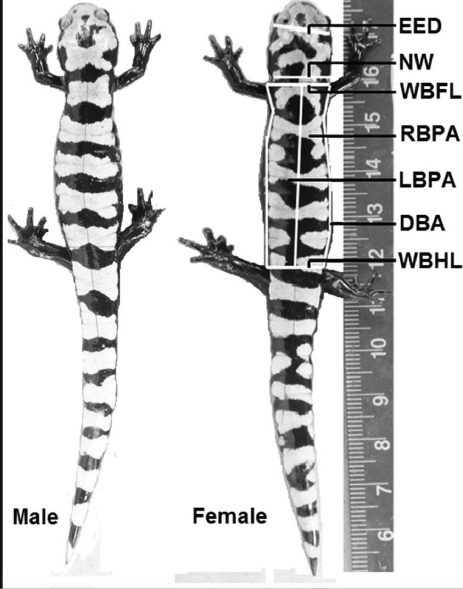

According to the International Union for Conservation of Nature (IUCN), Marbled Salamanders are considered to be of least concern. They are not immune to the impending threats that amphibians face, however. Conserving Salamanders is imperative for the survival of our environment. Here we will briefly explore conservation efforts that help protect the Marbled Salamander population.

1) disease control via pest control
2) nutrition cycling
3) medical research
4) food supply
There are multiple different strategies being implemented to protect Marbled Salamanders. It ranges from specific species targeted conservation to broad habitat protection efforts. Main habitat preservation efforts focus on breeding vernal pools as well as managing safe routes for salamander breeding migrations.